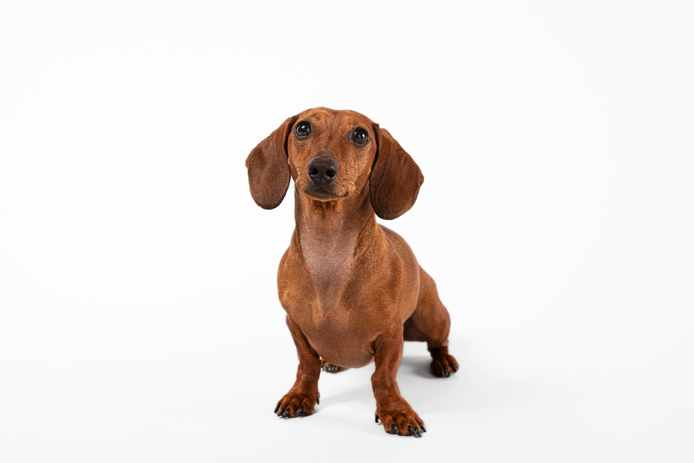

- 全部
- 送/認養注意事項
- 寵物知識+
- 其他
寵物知識+
臘腸狗的常見疾病！
發佈於 2020-08-18 by 浪圓官方
#臘腸狗

臘腸狗全身上下都有些常見疾病，身為臘腸狗狗的飼主可要特別小心留意喔！
●中耳炎/外耳炎：臘腸狗狗因為是垂耳狗，所以耳朵容易藏污納垢，平時不要忘了幫狗狗清耳朵，洗完澡也要記得仔細吹乾喔！
●心臟問題：由於品種的關係，臘腸狗狗特別容易有心臟方面的問題，臘腸狗狗的家長們，可要記得每年至少一次帶去給獸醫師聽診，確認狗狗今年的健康狀況喔！
●椎間盤突出：因為身體長，腿卻很短，臘腸狗狗常會有脊椎彎曲及椎間盤突出問題，為了臘腸狗狗的健康著想，請盡量不要讓牠們爬樓梯，以免讓狗狗的脊椎承受過大的壓力，導致椎間盤突出，讓狗狗承受痛苦……
●肥胖：因為基因的關係，臘腸狗狗有著先天易胖的體質，臘腸狗狗的家長們，可別因為狗狗楚楚可憐的眼神就心軟就多餵了！這反而是對狗狗的健康有害，肥胖的臘腸狗狗不但對健康不好，還可能引發因肥胖引起的糖尿病……甚至因為體重會造成椎間盤壓力，也容易導致上述的椎間盤突出
●皮膚問題：因為基因再加上台灣溫暖潮濕，臘腸狗狗比其他狗狗更容易有皮膚方面的問題，若狗狗有禿毛、掉屑等等問題，請立刻帶去給獸醫師檢查平日也要注意健康飲食及清潔，洗澎澎的話，也別忘了選擇成份較天然的溫和洗毛精喔！
愛狗狗，就別忽視了重要的健康問題喔！
●中耳炎/外耳炎：臘腸狗狗因為是垂耳狗，所以耳朵容易藏污納垢，平時不要忘了幫狗狗清耳朵，洗完澡也要記得仔細吹乾喔！
●心臟問題：由於品種的關係，臘腸狗狗特別容易有心臟方面的問題，臘腸狗狗的家長們，可要記得每年至少一次帶去給獸醫師聽診，確認狗狗今年的健康狀況喔！
●椎間盤突出：因為身體長，腿卻很短，臘腸狗狗常會有脊椎彎曲及椎間盤突出問題，為了臘腸狗狗的健康著想，請盡量不要讓牠們爬樓梯，以免讓狗狗的脊椎承受過大的壓力，導致椎間盤突出，讓狗狗承受痛苦……
●肥胖：因為基因的關係，臘腸狗狗有著先天易胖的體質，臘腸狗狗的家長們，可別因為狗狗楚楚可憐的眼神就心軟就多餵了！這反而是對狗狗的健康有害，肥胖的臘腸狗狗不但對健康不好，還可能引發因肥胖引起的糖尿病……甚至因為體重會造成椎間盤壓力，也容易導致上述的椎間盤突出
●皮膚問題：因為基因再加上台灣溫暖潮濕，臘腸狗狗比其他狗狗更容易有皮膚方面的問題，若狗狗有禿毛、掉屑等等問題，請立刻帶去給獸醫師檢查平日也要注意健康飲食及清潔，洗澎澎的話，也別忘了選擇成份較天然的溫和洗毛精喔！
愛狗狗，就別忽視了重要的健康問題喔！